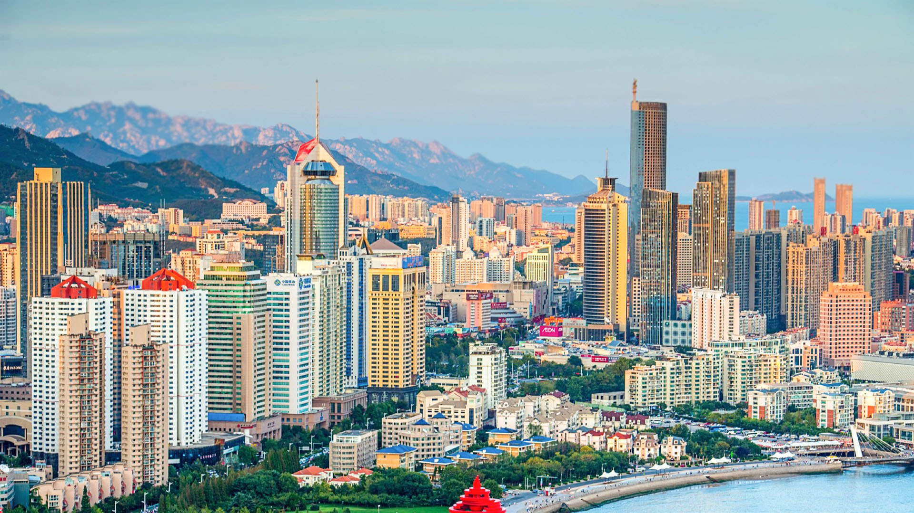

由古至今
沂源人→商朝→齐国，鲁国→秦汉时期→五四运动→现代
沂源人
目前发现最早的山东人——“沂源人”，可以把山东的历史上推到四五十万年以前。新石器时代早、中期的北辛文化，距今有8000年左右。举世闻名的原始社会末期的大汶口文化、龙山文化都是在山东首先发现的。自夏朝开始，山东进入奴隶制社会。
商朝
商朝建立后，山东仍是其统治的中心地区。西周实行“封邦建国”之策，封吕尚于齐，封周公旦于鲁，另外尚有曹、滕、卫诸国。
齐国，鲁国
齐国“通商工之业，便鱼盐之利，而人民多归”；鲁国融合周文化与东方文化，为“礼仪之邦”。齐、鲁作为周王朝的两大支柱，经济、文化取得更快发展，对以后山东地方历史的发展有着重大影响。
秦汉时期
秦汉时期，今山东地区号称“膏壤千里”。 山东的纺织手工业举世闻名。战国时期，齐国即号称“冠带衣履天下”。临淄、定陶(菏泽一个县)、亢父（今济宁）是汉代三大纺织中心。所产纺织品数量多、质量好，源源不断地通过“丝绸之路”输往西域等地，因此，当时山东地区是“丝绸之路”的主要源头之一。唐代兖州的镜花绫、青州的仙纹绫，都是驰名全国的纺织品。宋代在青州设立织锦院，专门织造高级纺织品。宋神宗时，在山东“和买”绢帛，每年达30万匹左右。
五四运动
1919年五四运动期间，山东人民掀起了声势浩大的反帝爱国运动。五四运动以后，山东成立了早期的共产主义小组，1921年，王尽美、邓恩铭参加了中国共产党第一次全国代表大会，成为全国建党最早的省份之一。抗日战争爆发后，山东人民先后发动了冀鲁边、鲁西北、天福山、黑铁山、牛头镇、徂徕山、泰西、鲁南、湖西等抗日武装起义，创建了胶东、渤海、滨海、鲁中、鲁南五个解放区，至1945年5月下旬，人民武装力量已发展到21.3万人，民兵41万人，在八年抗战中共歼灭日伪军43.9万多人。抗日战争胜利后，山东人民又配合中国人民解放军，粉碎了国民党军队的重点进攻，进行了鲁南、莱芜、孟良崮、潍县、济南等著名战役。
现代
当今的山东省地理位置十分优越，不仅有临海半岛，促进渔业的发展，内陆也与河北河南、江苏、安徽四省接壤，也便于省省之间互通共促发展，山东省的经济很发达，GDP多年位居全国前列，其下辖的经济第一大市青岛市GDP也突破万亿元。
